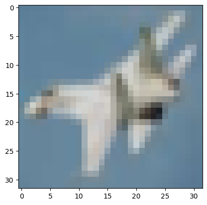

Finals - Hands-on Exercise 2 (CIFAR-10 CNN Model Summary, Training and Accuracy)
Description: A deep learning computer vision project focused on building, training, and evaluating a Convolutional Neural Network (CNN) to classify the CIFAR-10 dataset into 10 distinct object categories.
Objectives/Purpose:
- To preprocess and normalize 32x32 RGB image data for neural network ingestion.
- To design a multi-layer Convolutional Neural Network architecture for spatial feature extraction.
- To utilize Max Pooling layers for dimensionality reduction and computational efficiency.
- To compile, train, and evaluate the model using Sparse Categorical Crossentropy and the Adam optimizer.
Key Features
- Data Normalization: Scaled pixel values from a 0-255 range down to a 0-1 float range, ensuring stable and faster gradient descent convergence.
- Deep CNN Architecture: Constructed a sequential model containing four
Conv2Dlayers (increasing from 32 to 64 filters) to extract hierarchical visual features, interspersed withMaxPool2Dlayers. - Dense Classification Head: Flattened the 2D feature maps into a 1D vector, passing it through a 120-unit hidden layer before outputting predictions via a 10-unit Softmax layer.
Important Code Blocks
1. Image Normalization
This simple but critical step divides all pixel matrices by 255.0, standardizing the input data distributions across the entire dataset.
X_train = X_train / 255.0
X_test = X_test / 255.02. CNN Model Architecture Definition
This block defines the core feature extraction and classification pipeline, utilizing a combination of convolution, pooling, and dense layers.
model = tf.keras.models.Sequential()
# Convolutional blocks for feature extraction
model.add(tf.keras.layers.Conv2D(filters=32, kernel_size=3, padding="same", activation="relu", input_shape=[32, 32, 3]))
model.add(tf.keras.layers.Conv2D(filters=32, kernel_size=3, padding="same", activation="relu"))
model.add(tf.keras.layers.MaxPool2D(pool_size=2, strides=2, padding="valid"))
model.add(tf.keras.layers.Conv2D(filters=64, kernel_size=3, padding="same", activation="relu"))
model.add(tf.keras.layers.Conv2D(filters=64, kernel_size=3, padding="same", activation="relu"))
model.add(tf.keras.layers.MaxPool2D(pool_size=2, strides=2, padding='valid'))
# Flatten and Dense layers for classification
model.add(tf.keras.layers.Flatten())
model.add(tf.keras.layers.Dense(units=120, activation='relu'))
model.add(tf.keras.layers.Dense(units=10, activation='softmax'))3. Model Evaluation
After training for 5 epochs, the model is evaluated against the unseen test dataset to determine its actual real-world generalization accuracy.
test_loss, test_accuracy = model.evaluate(X_test, y_test)
print("Test accuracy: {}".format(test_accuracy))Screenshots & Results

Execution Output & Metrics:
- Total Parameters: 558,418 (All trainable)
- Final Training Accuracy (Epoch 5): 82.21%
- Final Test Accuracy: 74.31%
Note: A gap of ~8% between training and testing accuracy indicates mild overfitting, which is common in deep networks trained without Dropout or Data Augmentation.
Tools & Technologies
- Languages: Python 3
- Libraries/Frameworks: TensorFlow/Keras (Sequential API, Conv2D, MaxPool2D), NumPy, Matplotlib
- Platforms: Google Colab (T4 GPU Accelerator)
Challenges & Solutions
Problems Encountered: Managing the dimensionality of the tensors as they pass through multiple convolutional and pooling layers can be error-prone. Additionally, observing the accuracy drop from 82% (train) to 74% (test) highlighted the network's tendency to memorize training data features rather than generalizing them.
How I Solved Them: I utilized the model.summary() method extensively to track the output shapes at each layer (e.g., watching the spatial dimensions shrink from 32x32 to 16x16, down to 8x8, before flattening into a 4096-element vector). To address the generalization gap in future iterations, regularization techniques like Dropout layers will need to be implemented.
Learning Reflection
What I Learned: I solidified my understanding of how Convolutional Neural Networks operate differently from standard Multi-Layer Perceptrons. I learned how filters extract spatial hierarchies (edges to shapes to objects) and how Max Pooling reduces computational load while providing translational invariance.
Skills Gained: Designing CNN architectures in Keras, analyzing model parameter summaries, and evaluating computer vision models on standardized benchmark datasets like CIFAR-10.